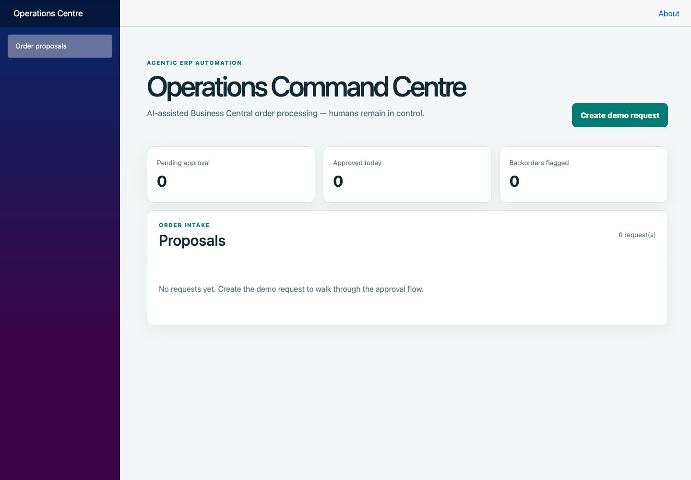
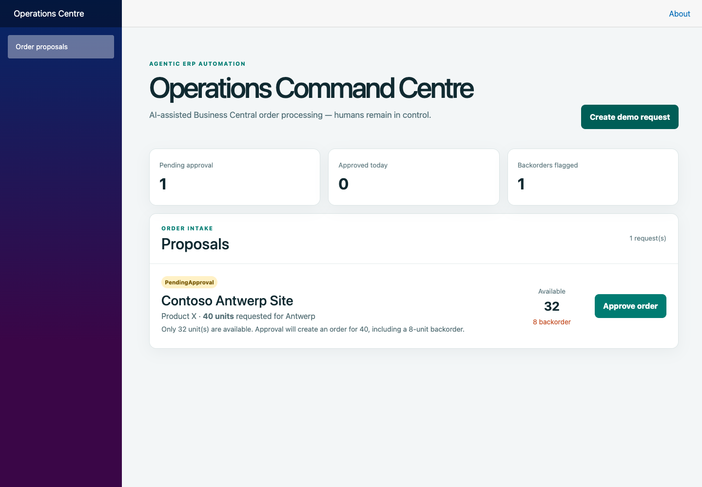
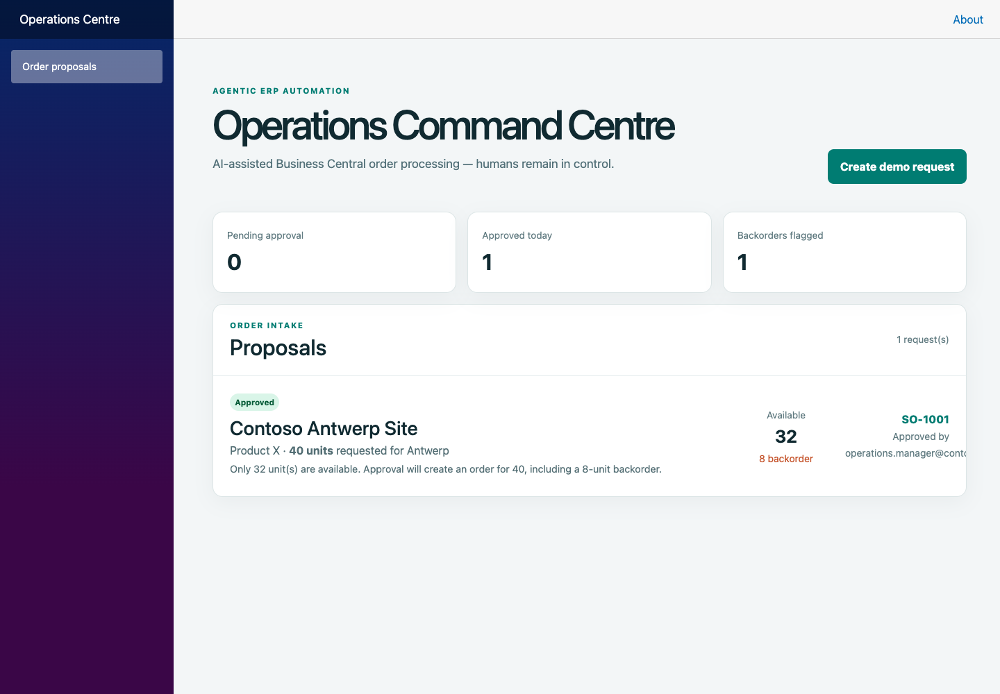

LOCAL DEMO · CAPTURED OCTOBER 12, 2026
Agentic Business Central Operations
A customer request becomes an inventory-aware proposal. A human approves it before the simulated ERP creates the sales order.
Run the interactive app: execute
bash scripts/run-local.sh from the repository root and open
localhost:5058. This page is an offline showcase of real screenshots. The application uses seeded, in-memory data and deterministic extraction; no Azure, real ERP or live AI connection is required.
1. Start with an empty dashboard
Pending approvals, approved orders and backorder flags start at zero.

2. Create a request and review the exception
40 units requested, 32 available, 8 on backorder. The proposal awaits explicit approval.

3. Approve the simulated sales order
Approval produces SO-1001, records the approver and completes the three-event audit trail.

Screenshot tour
A 12-second slideshow of the captured states.
Demo records reset when the API restarts. The Azure-hosted demo has been retired; a future cloud deployment is an explicit paid choice.